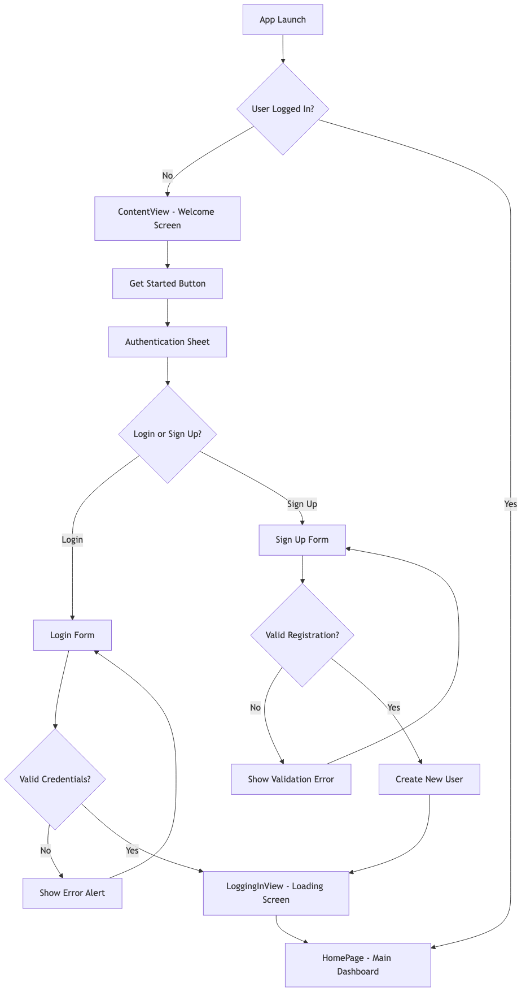
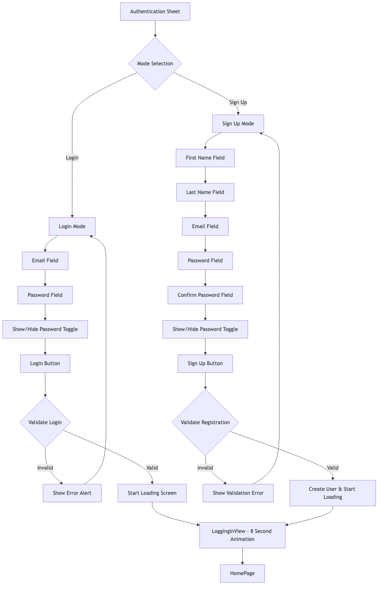
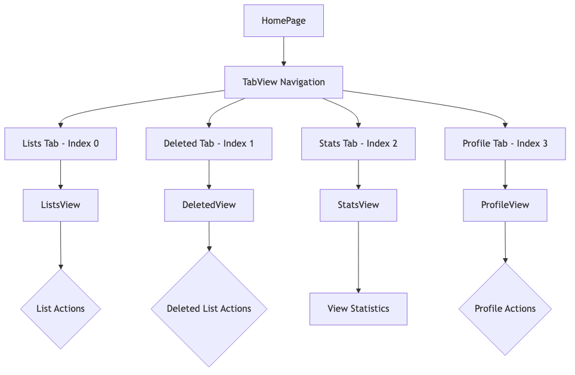
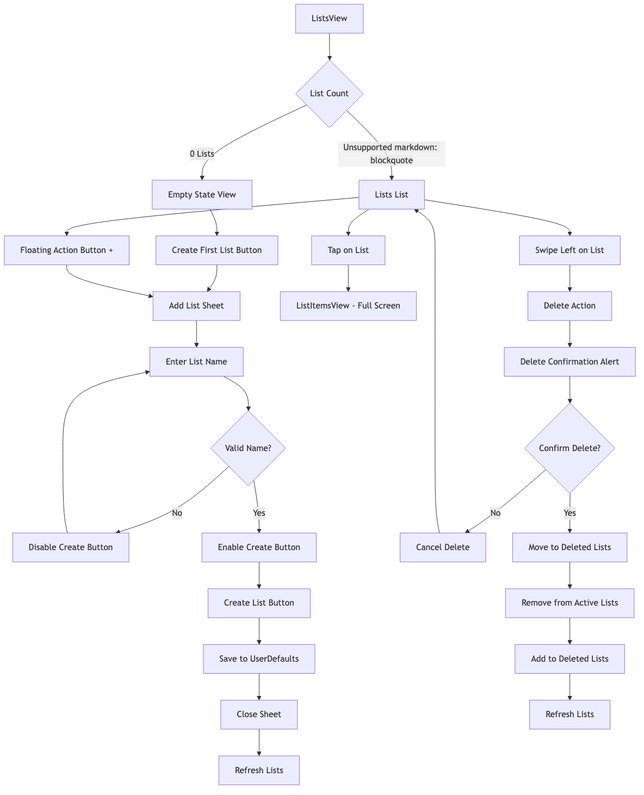
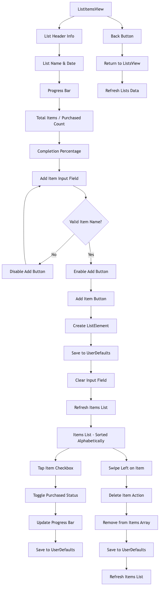
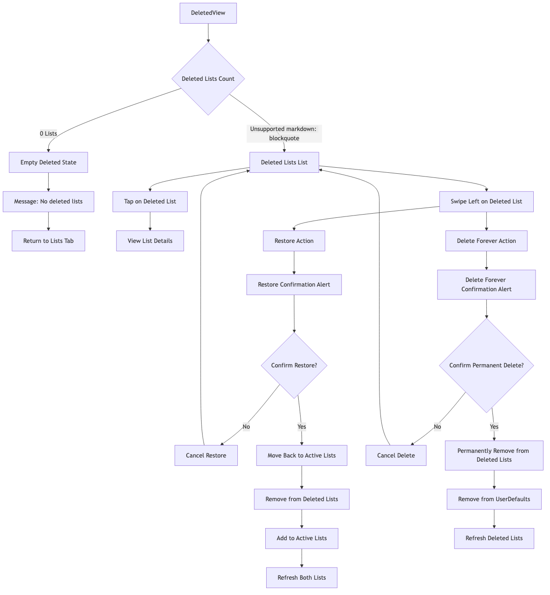
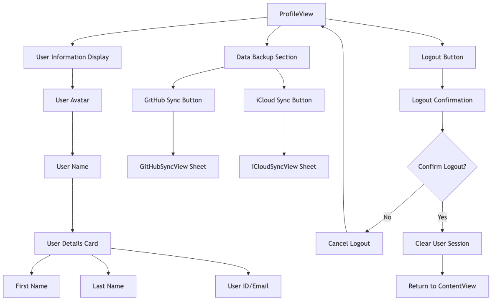
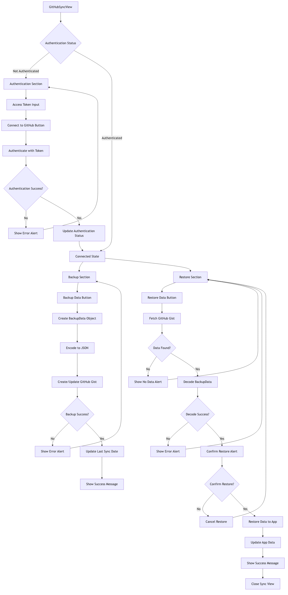
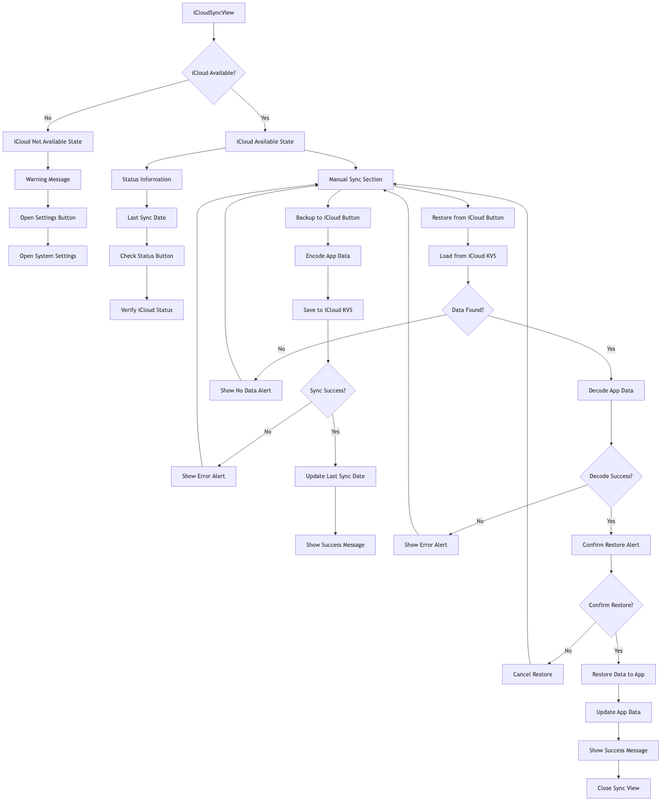
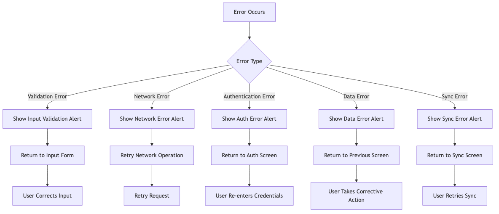

This document provides a comprehensive flowchart of all possible user flows in the MultiPurposeApp, from initial launch to all possible user interactions and navigation paths. Each diagram has been professionally rendered using Mermaid CLI for optimal quality and clarity.
Overview
Overview

Figure 1: Overview
This document provides a comprehensive flowchart of all possible user flows in the MultiPurposeApp, from initial launch to all possible user interactions and navigation paths.
Main Application Flow

Figure 2: Main Application Flow
Authentication Flow

Figure 3: Authentication Flow
Main Dashboard Navigation

Figure 4: Main Dashboard Navigation
Lists Management Flow

Figure 5: Lists Management Flow
List Items Management Flow

Figure 6: List Items Management Flow
Deleted Lists Management Flow

Figure 7: Deleted Lists Management Flow
Statistics Dashboard Flow

Figure 8: Statistics Dashboard Flow
Profile Management Flow

Figure 9: Profile Management Flow
GitHub Sync Flow

Figure 10: GitHub Sync Flow
iCloud Sync Flow

Figure 11: iCloud Sync Flow
Error Handling Flow
Data Persistence Flow
Performance Optimization Flow
Complete User Journey Examples
#
New User Journey
#
Returning User Journey
#
Data Backup Journey
---
MultiPurposeApp v1.0.0 - Comprehensive user flow documentation for all possible navigation paths and interactions. Last Updated: July 31, 2025